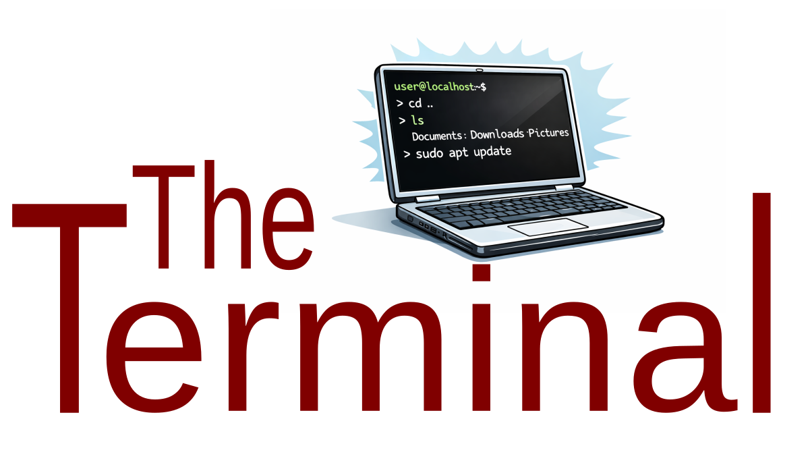

6 Introduction to Linux Environment and Command Line.
6.1 The Unix / Linux environment
Unix and Linux (a variant of Unix) are operating systems (like Windows or macOS). They belong to a “family” of operating systems that share a common ancestor, have been around since 1969 and it’s not likely to disappear any time soon.
Commonly used among the scientific and technical community (e.g. servers and scientific clusters).
macOS is Unix-based system.
Most supercomputers are powered by Unix-like operating systems.
6.2 Why learn Unix command line?
- Is the foundation of scientific computing (e.g. bioinformatics and data analysis)
- Powerful for working on large datasets and files
- Helps automate repetitive tasks (e.g. imagine you need to need to rename or modify 1,000 files?)
- Enables use of higher-powered computers elsewhere (clusters and servers/cloud-computing)
6.3 Some terminology

As a user you can “communicate” with your Linux system either by a Graphical User Interface (GUI) or by typing instructions (commands) using a Command Line Interface (CLI). At first it might look quite complex and confusing but once you understand the concept and the basics then its quite simple and intuitive!
Command Line: is the written instructions we type.
Terminal: also known as terminal emulator is the text-based environment (software) capable of taking input and providing output.
Shell: a program that interprets command-line input and executes commands. There are different shells available e.g bash, zsh, sh, csh etc. Each of them offering unique features and functionalities. Some are more basic and some are more fancy but all serve the same purpose, to interpret the commands provided by the user and output the results. The most commonly used is the bash shell.
6.4 Some important rules
- Be aware of the case! The command line is case sensitive so be careful when typing. For example, typing
Echois not the same asecho, nor are the directory names “/Results” and “/results”. - Spaces are having special use! The command line uses spaces as separators between arguments. Using spaces in filenames or directory names will certainly cause problems sooner or later. Avoid using names that contain spaces, but rather it’s better to use dashes (
-) or underscores (_). e.g., “results_2026.txt” is preferred over “results 2026.txt”. - Apart from spaces there are several other characters (special characters) that can be used to perform special operations. See some examples bellow.
| Character | Description |
|---|---|
| / | Directory separator, used to separate a string of directory names. Example: /usr/src/linux |
| \ | Escape — (backslash) prevents the next character from being interpreted as a special character. This works outside of quoting, inside double quotes, and generally ignored in single quotes. |
| . | Current directory. Can also “hide” files when it is the first character in a filename. |
| .. | Parent directory |
| ~ | The tilde is a representation of the current user’s home directory. |
| * | Represents 0 or more characters in a filename, or by itself, all files in a directory. |
| ? | Represents a single character in a filename. |
| $ | Expansion — introduces various types of expansion: parameter expansion (e.g. $var or ${var}), command substitution (e.g. $(command)), or arithmetic expansion (e.g. $((expression))). More on expansions later. |
| [ ] | Can be used to represent a range of values, e.g. [0-9], [A-Z], etc. Example: hello[0-2].txt represents the names hello0.txt, hello1.txt, and hello2.txt |
| | | Pipe — send the output from one command to the input of another command. This is a method of chaining commands together. Example: echo “Hello beautiful.” | grep -o beautiful. |
| > | Redirect output of a command into a new file. If the file already exists, over-write it. Example: ls > myfiles.txt |
| >> | Redirect and appends the output of a command onto the end of an existing file. |
| < | Redirect a file as input to a program. |
| ; | Command separator. Allows you to execute multiple commands on a single line. Example: cd /var/log ; ls -l |
| && | Command separator as above, but only runs the second command if the first one finished without errors. |
| & | Background – when used at the end of a command, run the command in the background (do not wait for it to complete). |
| # | Comment — the # character begins a commentary that extends to the end of the line. Comments are notes of explanation and are not processed by the shell. |
6.5 Accessing your Terminal
You are using a Kubuntu Linux system. In Kubuntu, the terminal emulator is called Konsole. You can start it in any of the following ways:
1. Press Ctrl + Alt + T to open Konsole instantly.
2. Open the Krunner by pressing Alt + Space, type Konsole, then press Enter.
3. Open the Application Launcher → System → Konsole.
Now you are ready to start typing your first commands!